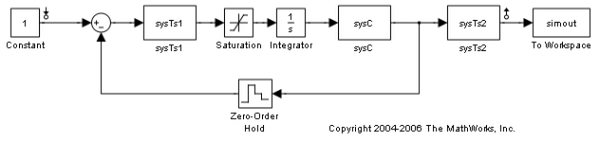
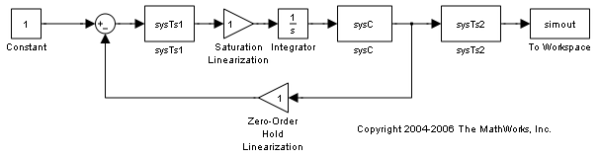
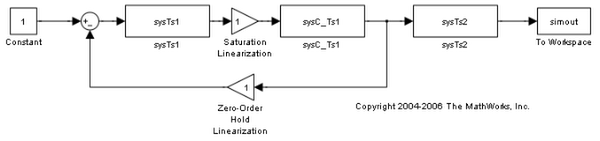
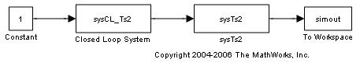

マルチレート モデルの線形化
目次
この例では、非線形マルチレート Simulink® モデルの線形モデルを抽出するときに、コマンドの線形化で使用されるプロセスを説明します。概念を説明するには、最初に Control System Toolbox™ の関数を使用してプロセスを実行してから、線形化コマンドを使用して繰り返します。
問題の例
Simulink モデル scdmrate.mdl には、5 つのブロックで指定された 3 つの異なるサンプリング レートがあります。ブロックは以下のとおりです。
- sysC - 連続線形ブロック
- Integrator - 連続積分器
- sysTs1 - サンプル時間が 0.01 秒のブロック
- sysTs2 - サンプル時間が 0.025 秒のブロック
- Zero-Order Hold - 入力信号を 0.01 秒でサンプリングするブロック
sysC = zpk(-2,-10,0.1); Integrator = zpk([],0,1); sysTs1 = zpk(-0.7463,[0.4251 0.9735],0.2212,0.01); sysTs2 = zpk([],0.7788,0.2212,0.025);
次のモデルは、ブロックの接続方法を示しています。
scdmrate
この例では、Constant ブロックの出力と sysTs2 ブロックの出力間のモデルを線形化します。
手順 1: モデル内のブロックの線形化
線形化の最初の手順として、モデル内の各ブロックを線形化します。Saturation ブロックと Zero-Order Hold ブロックの線形化は 1 です。LTI ブロックは既に線形であるため、そのままです。線形化ブロックを持つ新しいモデルを次に示します。
scdmratestep1
手順 2: レート変換
モデル内のブロックには、異なるサンプリング レートが含まれているため、最初にレート変換関数を使用して、さまざまなレートを代表的なシングル レートに変換しないと、システムに対してシングルレート線形化モデルを作成することはできません。レート変換関数では、反復法が使用されます。反復は、モデル内のサンプル時間の最小公倍数で開始されます。この例では、サンプル時間は、0 秒、0.01 秒、および 0.025 秒で、最小公倍数は 0.05 です。レート変換関数は、最速のサンプリング レートを持つブロックの組み合わせを取得し、2 番目に速いサンプリング レートでリサンプリングします。この例では、最初の反復で、線形化された連続時間ブロック sysC と integrator の組み合わせをゼロ次ホールドの連続から離散への変換を使用して、0.01 のサンプル時間に変換します。
sysC_Ts1 = c2d(sysC*Integrator,0.01);
sysC ブロックと Integrator ブロックが sysC_Ts1 に置き換えられました。
scdmratestep2
次の反復で、0.01 のサンプル時間を持つすべてのブロックを 0.025 のサンプル時間に変換します。まず、次のコマンドは、フィードバック ループを閉じることで、これらのブロックの組み合わせを表します。
sysCL = feedback(sysTs1*sysC_Ts1,1);
次に、ゼロ次ホールド法で、閉ループ システム sysCL を 0.01 のサンプリング レートから 0.025 に変換します。
sysCL_Ts2 = d2d(sysCL,0.025);
システム sysCL_Ts2 がモデル内のフィードバック ループに置き換えられます。
scdmratestep3
最後の反復で、閉ループ システムとブロック sysTs2 の組み合わせが 0.025 秒のレートから 0.05 秒のレートまでリサンプリングされます。
sys_L = d2d(sysCL_Ts2*sysTs2,0.05)
Zero/pole/gain: 0.0001057 (z+22.76) (z+0.912) (z-0.9048) (z+0.06495) ------------------------------------------------------- (z-0.01373) (z-0.6065) (z-0.6386) (z-0.8588) (z-0.9754) Sampling time: 0.05
Simulink® Control Design™ コマンドを使用したモデルの線形化
これらの結果は、Simulink® Control Design™ のコマンド ライン インターフェイスを使用して再生できます。
model = 'scdmrate'; io(1) = linio('scdmrate/Constant',1,'in'); io(2) = linio('scdmrate/sysTs2',1,'out','on'); sys = zpk(linearize(model,io))
Zero/pole/gain from input "Constant" to output "sysTs2": 0.0001057 (z+22.76) (z+0.912) (z-0.9048) (z+0.06495) ------------------------------------------------------- (z-0.6065) (z-0.6386) (z-0.8588) (z-0.9754) (z-0.01373) Sampling time: 0.05